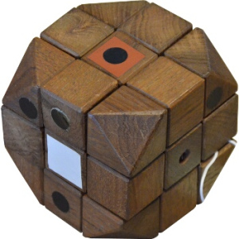
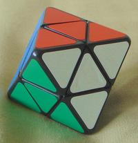
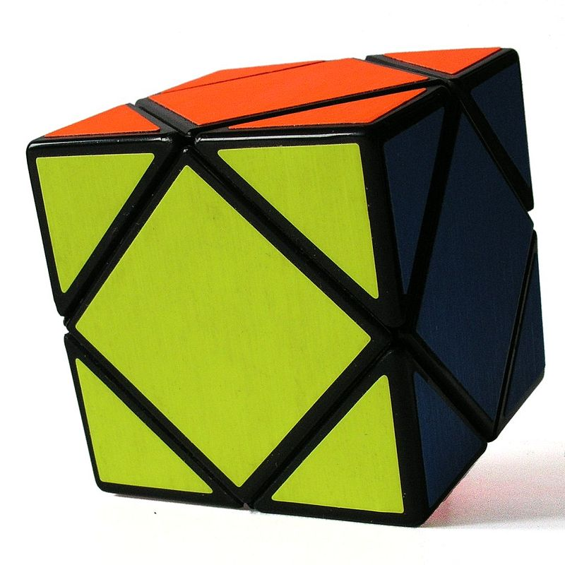
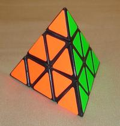
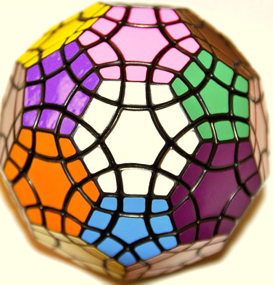

魔術方塊
小組報告
魔術方塊的歷史:
1970年3月，Larry Nichols發明了「Puzzle with Pieces Rotatable in Groups」，並申請了加拿大專利，是個2×2×2的魔術方塊，但是每個方塊之間是用磁鐵互相吸在一起。1972年獲得美國專利，比魯比克教授的魔術方塊早兩年。魯比克·厄爾諾是匈牙利的建築學和雕塑學教授，為了幫助學生們認識空間立方體的組成和結構，所以他自己動手做出了第一個魔術方塊的雛形來，其靈感是來自於多瑙河中的沙礫
1974年，魯比克教授發明了第一個魔術方塊（當時稱作Magic Cube），並在1975年獲得匈牙利專利號HU170062，但沒有申請國際專利。第一批魔術方塊於1977年在布達佩斯的玩具店販售。與Nichols的魔術方塊不同，魯比克教授的零件是像卡榫一般互相咬合在一起，不容易因為外力而分開，而且可以以任何材質製作。
1979年9月，Ideal Toys公司將魔術方塊帶至全世界，並於1980年一、二月在倫敦、巴黎和美國的國際玩具博覽會亮相。
展出之後，Ideal Toys公司將魔術方塊的名稱改為Rubik's Cube，1980年5月，第一批魔術方塊在匈牙利出口。


第一個魔術方塊套子和第一個魔術方塊
魔術方塊的解法教學影片:
魔術方塊的延伸種類:
鑽石魔術方塊、斜轉方塊、金字塔魔術方塊、亞歷山大之星、tuttminx等





魔術方塊的好處:
魔方可以培養人的動手和動腦的能力，並且極大程度上訓練人的記憶力，判斷力以及空間想像力。魔方已經是一項競技運動，很自然的也就具備了競技運動共同的好處，而且比起其他競技類的運動，魔方運動是最安全的。同學間互動性好。魔方的技術含量高，若想學習還原或者快速還原只靠自己研究努力肯定不如與他人交流經驗來得快，而且魔方運動的成本非常低，幾十塊就能買到了。魔方運動沒有年齡的限制，它不像一般體育運動過了黃金年齡段就意味著運動生涯的結束，上至耄耋老翁，下至懵懂孩童都可以輕鬆地轉動魔方。